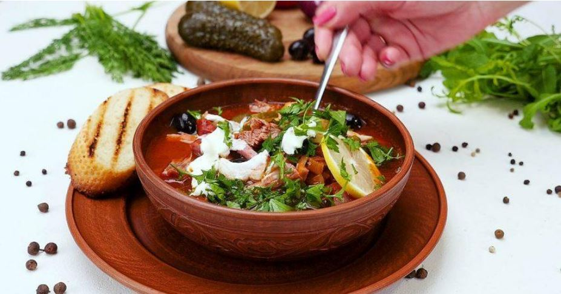

Солянка – це густий, переважно, м'ясний суп, який готують на бульйоні з гострими приправами.
До складу цієї страви також входять оливки чи маслини, які в певних рецептах замінюють каперсами.
В солянку можна додати будь-які ковбасно-м'ясні вироби, що є в холодильнику. Чим більш різноманітне м'ясо - тим насиченіший смак.
До того ж, це хороший набір смаків: кислинка від томатів, солод від засмаженої в маслі цибулі, а сіль від огірків чи оливок.
З яловичини чи свинини зварити бульйон, додати лавровий лист і чорний перець. Нарізати м'ясо з бульйону, сосиски, ковбасу і шинку чи сирокопчену ковбасу. Цибулю, огірки і петрушку дрібно нарізати й тушкувати близько 10 хв з томатною пастою.
Покласти до бульйону тушковану суміш і варити не більше 10 хв. Потім додати м'ясо, сосиски, шинку й ковбасу. Варити, поки не закипить бульйон. Вилити в солянку маслини разом з розсолом. Довести до кипіння і відразу ж вимкнути. Подавати на стіл зі скибочкою лимона і сметаною.
